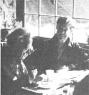

As we've noted several times in these pages, Helen and Scott Nearing are light years ahead of must of us when it comes to getting back to the land and living a life of voluntary simplicity. As well they should be, since they originally homesteaded a run-down farm in Vermont's Green Mountains array back in the autumn of 1932.
Life was good for the Nearings on that mini-farm . . . until the slopes around them exploded into ski resorts in the early 50's, forcing Helen and Scott to move on to a rocky inlet on the roast of Maine and start all over again.
And that's where you'll find the Nearings today: still clearing brush, still building honest stone houses (Helen and Scott are famous for their stone houses), and still raising most of their vegetarian diet themselves in unbelievably productive wholistic gardens . . . just as they've been doing for nearly 50 years.
Naturally (in more ways than one), the Nearings have learned a few things about homesteading and getting bark to basics over the years. And, lucky for all of us, they've agreed to share some of that knowledge with MOTHER's readers in a regular question and answer column. If you 'd like to get in on the action, send your question or questions about self-sufficient living on the land to Helen and Scott Nearing, THE Mother Earth News(restricted) , P.O. Box 70, Hendersonville, N.C. 28791. And please don't expert personal replies to your queries. The most important and most frequently asked questions will he answered here - and here only - where we all can road what the Nearings have to say.
THE WISDOM OF HELEN AND SCOTT
My family and I are planning our move back to the land and have set our sights on a place that has good (or at least salvageable) soil, a reasonable growing season, and a location no less than several hundred miles from the nearest nuclear power plant.
We have heard that your farm is now within 100 miles of a nuclear facility and in an acid rain area. Can you tell us how such unfortunate manifestations of our "modern times" have affected your lives . . . and how you are dealing with them?
Our lifestyle is the same as it was before the New England power plants existed. After all, what choice is there . . . other than to speak and write against the spread of such monstrosities, sign petitions, and generally make every reasonable effort to oppose the construction of the facilities? (Of course , we could move again, as we did when the construction of a ski resort threatened to mar the area around our quiet Vermont valley home, but we've really come to believe that there's no place to hide anymore.)
We haven't noticed any negative effects as yet - either to our physical health or to the well- being of our garden - as a result of either the nuclear plants or the acid rain. (Which, of course, does not mean that we are not concerned!)
I know you have a large library and that your books are probably used quite often. Can you tell me how you protect the printed treasures? (I've tried, in the past, covering mine in plastic, but that wrap has led to the accumulation of moisture and subsequent mildew problems.)
We do have a large library, which covers five walls in our home (we find that floor-to-ceiling bookcases are prettier than wallpaper, and provide good insulation as well!). Though many of the books are more than 50 years old, we've never tried to cover them with plastic. Our "preservation" process simply involves treating every one with respect. (Our books do sometimes get rumpled and damaged, but only when we lend them out. We feel that if you regularly allow others to borrow your volumes, it might indeed be wise to use a protective covering - perhaps brown paper - and to keep your own "library card" system . . . so you can keep track of where the books are and, perhaps, eventually get them back.)
My wife and I recently sold our small farm near Philadelphia and we are considering relocating somewhere in Maine (I'd really like to live within the belt between Bangor and the sea). My spouse, however, is concerned that the winters there might be far too cold . . . even for "youngsters" like us (we're in our 60's). Can you tell me if you find the Maine winters debilitatingly chilly? I'd also like to know the length of your area's growing season, and whether - in your opinion - reasonably priced land is still available "up north".
We've lived here for 27 years, and - being in our 70's and 90's - are a bit older than you folks. We've never found the winters as piercingly cold as those in Vermont (where the temperature sometimes dropped to 45° below zero!). However, we enjoyed the dry cold of Vermont. Here in Maine the wintertime "lows" - which we enjoy as well - rarely reach 25° below . . . but the humidity at our coastal location is typically high and can make the cold seem worse than it is. Inland, away from the ocean fogs, the weather is less humid.
Our frost-free growing season is about 105 days. The deep freeze , on the other hand, lasts about three months in this neck of the woods.
We're afraid that - given the state of today's economy - reasonable land prices have all but disappeared, nationwide. We bought our Vermont sugarbush for $20 per acre back in the 1930's . . . and heard recently that the came property is now going for $8,000 per acre! Of course, land inflation in our area of Maine is not so severe as it is on the Vermont ski slopes. Good waterfront property is in the "$2,U00 per" range now . . . but "landlocked" prices are still a bit lower.
I'm a 17-year-old girl living - at the moment - with my parents in Papua, New Guinea, and I'm serious about homesteading. I'm not able to buy land here, as I'm not a citizen, so I'll be returning to the U.S. soon . . . but with few assets. Another complicating factor is that I'm somewhat unfamiliar with the climate, land, and people in the States. What do you suggest I do? Should I get a job, or further my schooling? I thoroughly enjoy your column and books and appreciate the help I've received from reading both.
When you get back to the States, try to obtain a job on a farm during the growing season and a part-time winter job in town. That "split shift" will allow you to acquire some of the skills you'll need for homesteading . . . pick up some money . . . perhaps go to night school during the off-season . . . and learn to live simply and efficiently.
You have mentioned that you are using dolomite limestone on your compost piles. If we're thinking about the same substance, I've found it to be pretty expensive ... at least here in Quebec, where I've been able to locate it only in small bottles in health food stores.
I'd like to know how much dolomite you add per compost pile, and whether you can get the limestone in large bags.
We do use dolomite limestone in our alkaline compost piles (a thin scattering on every layer). We buy the material in 50-pound bags at the local farm supply store, and it lasts for years if the sack is kept dry.
During some recent reading we were interested to learn that you were once associated with Krishnamurti. What do you think of his teachings?
For around five years, in my late teens and early 20's (Helen speaking), my life was closely linked to Krishnamurti. I lived with, traveled with, and corresponded with him during that time . . . and was greatly and beneficially influenced by his unique character and personality. The influence was lasting, although all contact with him has since been broken.
Krishnamurti's teaching emphasizes psychological freedom, inner awareness, and the search for completion in life. I, too, believe in all that, but I need no longer follow The Teacher. I'm working out my own life in my own way, as everyone should. J. Krishnamurti's job is talking . . . trying to enlighten people. Ours is to act . . . to do . . . to live full and purposeful lives . . . and to constantly strive to feel and express the beauty and unity of the cosmos.
|
 |
|
|